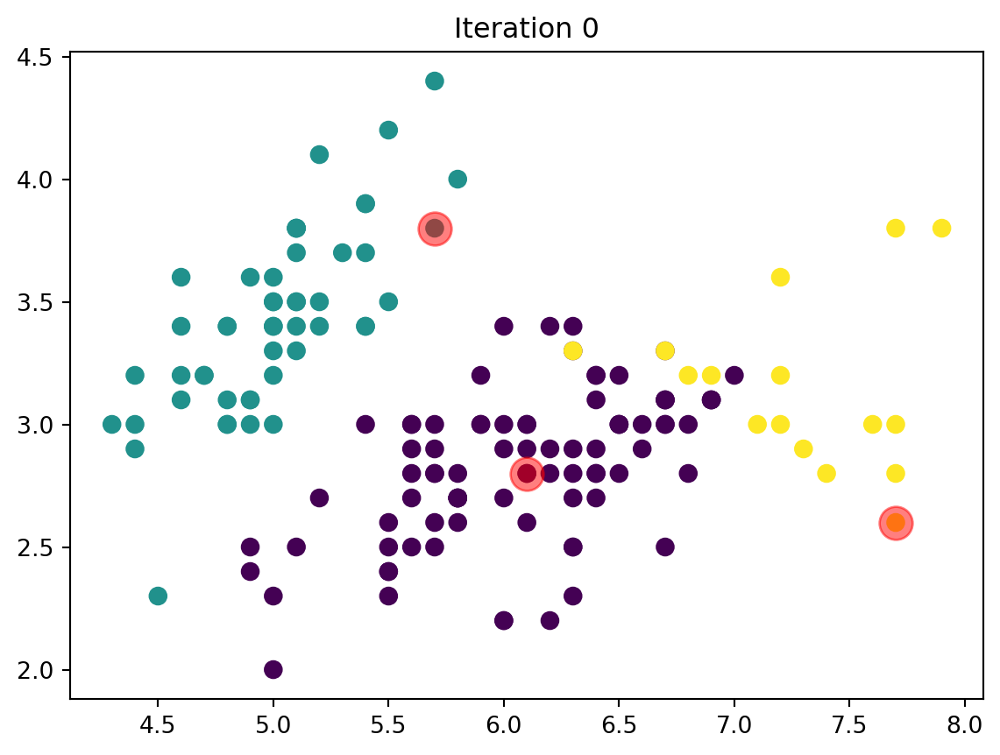
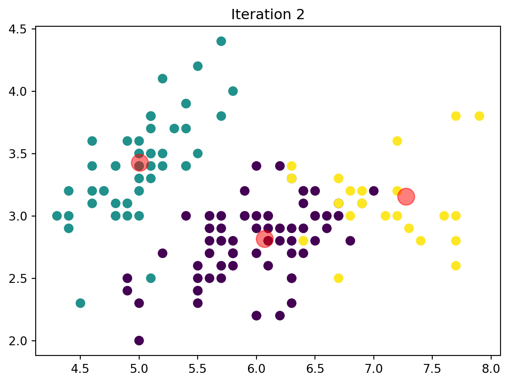
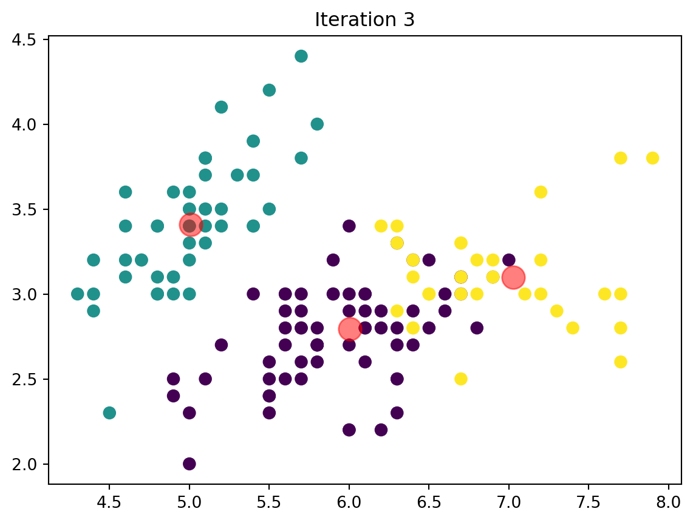
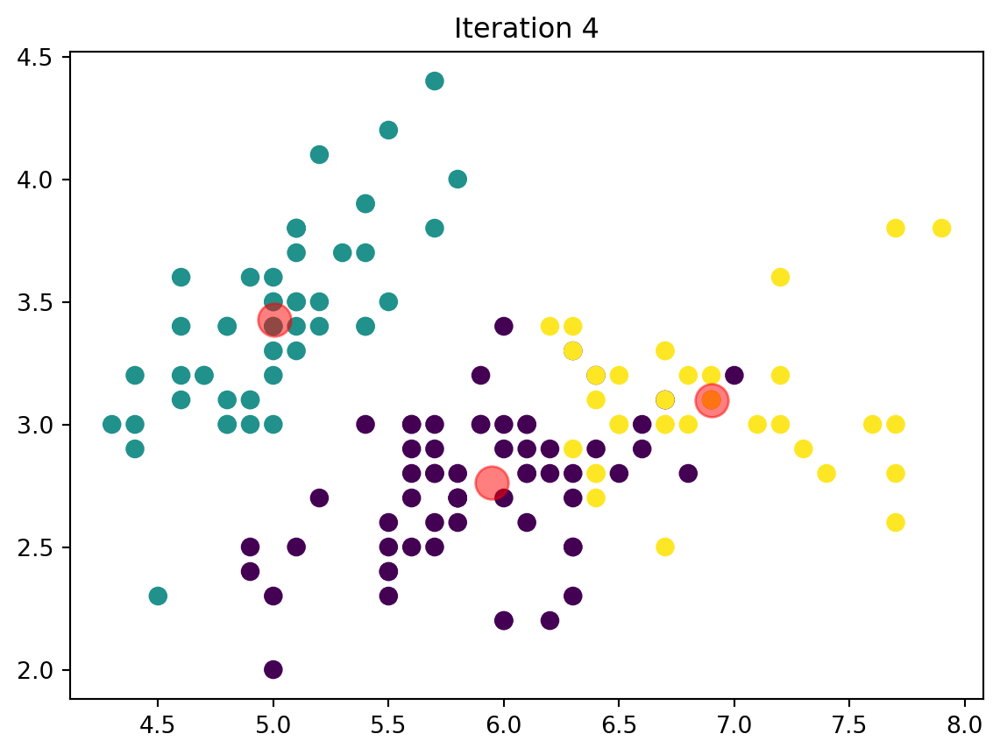
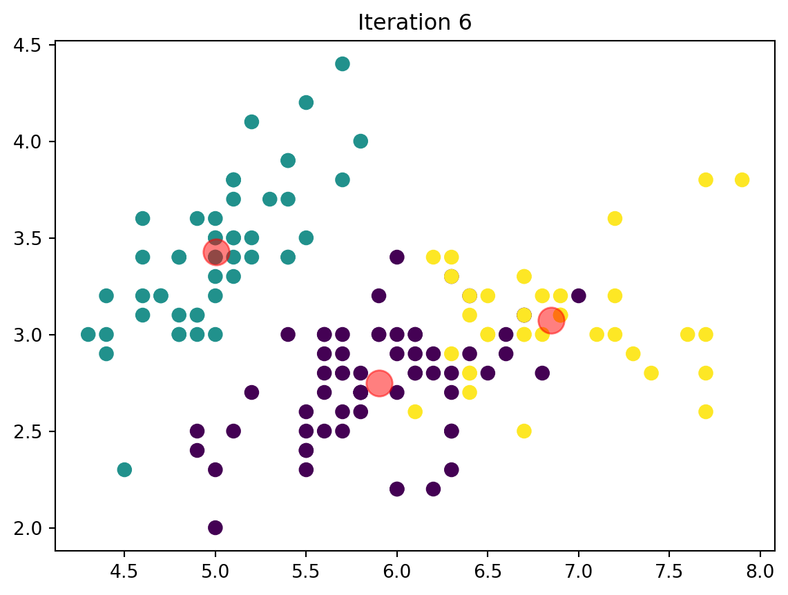
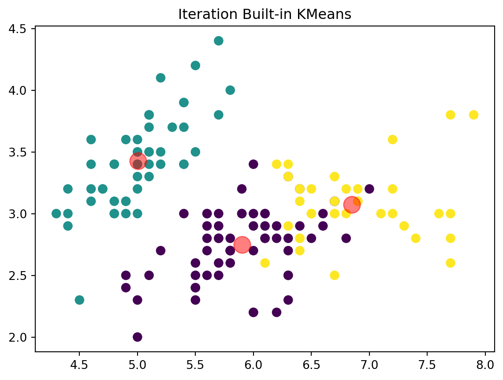
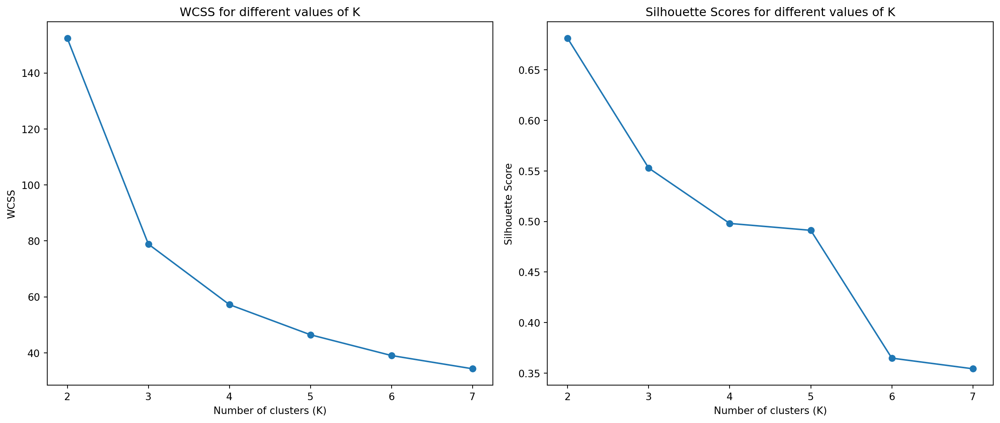

import pandas as pd
import numpy as np
import matplotlib.pyplot as plt
from sklearn.datasets import load_iris
from sklearn.cluster import KMeans
# Load the Iris dataset
iris = pd.read_csv('/home/jovyan/code/MGTA 495/QUARTO_WEBSITE/data/iris.csv')
data = iris.iloc[:, :-1].valuesHomework5 - Segmentation Methods
K-Means
We will first load the Iris dataset to implement the k-means algorithm and compare its results with Python’s built-in kmeans function.
Step 1: Load the Dataset
Step 2: Implement the K-Means Algorithm
We will implement the k-means algorithm from scratch. This involves three main functions:
Initialize Centroids: Randomly select k data points as initial centroids.
Assign Clusters: Assign each data point to the nearest centroid.
Update Centroids: Calculate the new centroids by taking the mean of all data points assigned to each cluster.’
Iterate: Repeat the assign and update steps until the centroids do not change significantly (convergence).
# Implement K-Means
def initialize_centroids(data, k):
np.random.seed(42)
random_indices = np.random.permutation(data.shape[0])
centroids = data[random_indices[:k]]
return centroids
def assign_clusters(data, centroids):
distances = np.sqrt(((data - centroids[:, np.newaxis])**2).sum(axis=2))
return np.argmin(distances, axis=0)
def update_centroids(data, labels, k):
new_centroids = np.array([data[labels == i].mean(axis=0) for i in range(k)])
return new_centroids
def k_means(data, k, max_iters=100):
centroids = initialize_centroids(data, k)
for i in range(max_iters):
labels = assign_clusters(data, centroids)
new_centroids = update_centroids(data, labels, k)
if np.all(centroids == new_centroids):
break
centroids = new_centroids
return centroids, labelsStep 3: Visualize the Clustering Steps
Visualize the progress of the algorithm at each step to understand how the centroids and cluster assignments change over iterations.
# Visualization
def plot_kmeans(data, centroids, labels, k, iteration):
plt.scatter(data[:, 0], data[:, 1], c=labels, s=50, cmap='viridis')
plt.scatter(centroids[:, 0], centroids[:, 1], c='red', s=200, alpha=0.5)
plt.title(f"Iteration {iteration}")
plt.show()
# Run custom K-Means
k = 3
centroids = initialize_centroids(data, k)
labels = assign_clusters(data, centroids)
# Plot initial state
plot_kmeans(data, centroids, labels, k, iteration=0)
# Run K-Means algorithm and plot each step
max_iters = 10
for i in range(max_iters):
labels = assign_clusters(data, centroids)
plot_kmeans(data, centroids, labels, k, iteration=i+1)
new_centroids = update_centroids(data, labels, k)
if np.all(centroids == new_centroids):
break
centroids = new_centroids




Step 4: Compare with Built-in KMeans Function
Use the built-in KMeans function from the sklearn library to cluster the same dataset. This step serves as a benchmark to evaluate the custom implementation.
# Compare with built-in KMeans
kmeans = KMeans(n_clusters=3, random_state=42, n_init=10)
kmeans.fit(data)
sklearn_centroids = kmeans.cluster_centers_
sklearn_labels = kmeans.labels_
# Plot built-in KMeans result
plot_kmeans(data, sklearn_centroids, sklearn_labels, k, iteration='Built-in KMeans')
Comparison of Results with Built-in KMeans Function
After running the custom k-means algorithm and the built-in KMeans function, we can compare the results based on the final centroids, cluster assignments, and visualizations.
Custom K-Means Algorithm:
Initialization: Randomly initializes centroids.
Iterations: Repeats the assign and update steps until convergence.
Convergence: Achieves local optima where centroids and cluster assignments stabilize.
Visualization: Shows the evolution of clusters over multiple iterations.
Built-in KMeans Function:
Initialization: Uses multiple random starts (n_init=10 by default) to find a better global optima.
Iterations: Repeats the assign and update steps until convergence, similar to custom implementation but potentially more robust due to multiple initializations.
Convergence: Achieves local optima, with a higher likelihood of finding the global optima due to multiple random starts.
Visualization: Final clusters as determined by the built-in function.
Custom K-Means Algorithm Results:
Initial Centroids and Cluster Assignments:
The initial centroids are chosen randomly, leading to initial cluster assignments.
The centroids and clusters evolve over each iteration.
Iterations:
- The algorithm goes through multiple iterations (e.g., 7 iterations in our case) before converging to stable centroids.
Final Centroids and Clusters:
The final centroids represent the centers of the clusters after convergence.
The data points are assigned to the clusters based on proximity to these centroids.
Built-in KMeans Function Results:
Initialization with n_init=10:
The function runs the algorithm multiple times with different initial centroids and selects the best clustering outcome.
This increases the chance of finding the global optima.
Final Centroids and Clusters:
The final centroids and cluster assignments are determined after the best run out of multiple initializations.
This typically results in more stable and optimal clusters compared to a single run.
Visual Comparison:
Custom K-Means:
Iteration 0:
- Shows the initial random centroids and the initial cluster assignments.
Iterations 1-7:
Show the evolution of centroids and clusters.
The centroids move closer to the true cluster centers with each iteration.
Each plot shows the centroids (red) and data points (colored by cluster).
Built-in KMeans:
Final Clustering:
Shows the final centroids and cluster assignments.
These centroids are often more stable and better represent the true clusters due to multiple initializations.
The final plot shows the centroids (red) and data points (colored by cluster) as determined by the built-in function.
Analysis:
Centroid Locations:
The centroids from both methods should be close to each other if both achieve similar clustering results.
The built-in function’s centroids may be slightly more optimal due to multiple initializations.
Cluster Assignments:
Data points should be similarly assigned to clusters in both methods.
Any differences in assignments are likely due to the initialization and convergence process.
Convergence and Stability:
The built-in function typically converges faster and more reliably due to multiple initializations.
The custom implementation can converge to different local optima based on initial centroids.
Conclusion:
Both the custom k-means algorithm and the built-in KMeans function from sklearn effectively cluster the data. The built-in function generally provides more robust results due to its use of multiple initializations, reducing the risk of getting stuck in local optima. The custom implementation, however, provides valuable insight into the mechanics of the k-means algorithm and helps visualize the clustering process step-by-step.
Determine the optimal number of clusters
To test the optimal number of clusters, we can calculate both the within-cluster sum of squares (WCSS) and silhouette scores for different values of K (number of clusters) and plot the results.
Step 1: Calculate WCSS and Silhouette Scores
Here is how we find out the optimal number of clusters:
Calculate Within-Cluster Sum of Squares (WCSS):
- WCSS measures the total variance within each cluster. It is calculated as the sum of squared distances between each point and its corresponding centroid.
Calculate Silhouette Scores:
- Silhouette scores measure how similar a point is to its own cluster compared to other clusters.
Plot the Results:
- Plot WCSS and silhouette scores for K=2,3,…,7.
from sklearn.metrics import silhouette_score
wcss = []
silhouette_scores = []
K = range(2, 8)
for k in K:
kmeans = KMeans(n_clusters=k, random_state=42, n_init=10)
kmeans.fit(data)
wcss.append(kmeans.inertia_)
silhouette_scores.append(silhouette_score(data, kmeans.labels_))
# Plot WCSS and Silhouette Scores
plt.figure(figsize=(14, 6))
# Plot WCSS
plt.subplot(1, 2, 1)
plt.plot(K, wcss, marker='o')
plt.title('WCSS for different values of K')
plt.xlabel('Number of clusters (K)')
plt.ylabel('WCSS')
# Plot Silhouette Scores
plt.subplot(1, 2, 2)
plt.plot(K, silhouette_scores, marker='o')
plt.title('Silhouette Scores for different values of K')
plt.xlabel('Number of clusters (K)')
plt.ylabel('Silhouette Score')
plt.tight_layout()
plt.show()
Goal for the plots:
WCSS Plot:
Look for an “elbow” point where the WCSS starts to decrease at a slower rate. This point suggests the optimal number of clusters.
Silhouette Score Plot:
Look for the peak silhouette score. A higher silhouette score indicates better-defined clusters.
Step 2: Analysis of WCSS and Silhouette Score Plots
By looking at the plot, we can provide the analysis and conclusion below.
WCSS Plot:
The WCSS plot shows the sum of squared distances of samples to their closest cluster center.
We look for an “elbow point” where the rate of decrease sharply slows down. This point indicates a suitable number of clusters.
In the plot, there appears to be a noticeable elbow around K=3, suggesting that 3 clusters might be optimal.
Silhouette Score Plot:
The silhouette score measures the quality of the clustering. Higher scores indicate better-defined clusters.
We look for the peak in the silhouette score plot. The higher the peak, the better the clustering.
In the plot, the highest silhouette score is at K=2, but K=3 also has a relatively high score, making it a strong candidate for the number of clusters.
Conclusion:
WCSS Analysis: The “elbow” point in the WCSS plot suggests that K=3 is a good choice for the number of clusters.
Silhouette Score Analysis: The silhouette score peaks at K=2, but K=3 also has a high silhouette score, indicating well-defined clusters.
Based on both the WCSS and silhouette score analyses, it is suggested that 3 clusters (K=3) might be the optimal number of clusters for this dataset. However, considering both metrics,K=2 could also be a reasonable choice, depending on the specific requirements of the clustering task.